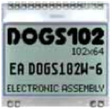
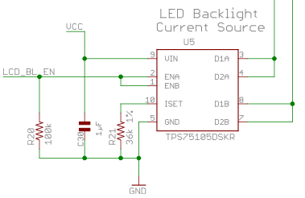

IIC2344 - Clase V
Uso del LCD
José Luis Honorato L.
jlhonora@ing.puc.cl

Características LCD
- LCD de 102x64 pixeles, modelo DOGS de Electronic Assembly.
- Backlight opcional
- Control de contraste por software/hardware
- A través de comandos se pueden prender y apagar pixeles: no existe un set de caracteres pre-definido
- Notación: un pixel "prendido" es de color negro
- Sólo podemos escribirle a la pantalla, no leer de ella
Controlador LCD
- uc1701, es el "cerebro" del LCD
- Puede controlar LCDs de mayor tamaño (65x132)
- Comunicación a través de 3-wire SPI
- Al no contar con un set de caracteres, debemos utilizar un "lookup table" embedido en el código
Controlador LCD
- Organización de pixeles: filas, columnas y páginas
- Filas: 64 (65)
- Columnas: 102 (132)
- Páginas: 8 (9)
- No podemos modificar sólo un pixel, sino que escribimos todo un byte en una columna y una página
- Dos tipos de instrucciones: comandos y datos
- En general, los datos van después de comandos
- Se selecciona el tipo a través de un pin específico, "C/D"
Inicialización LCD
- Power control: Booster, Regulator, Follower ON == 0x2F
- Setear contraste (Electronic Volume), 0x0F = 15
- Habilitar el display
- Invertir dirección de filas y columnas
- LCD ya se inicializa en el codigo de ejemplo
Interfaz SPI
- Comunicación msp-LCD: 3-wire SPI
- SPI: serial peripheral interface
- Existe un master y un slave
- 4 conexiones: Slave input master output (SIMO), Master input slave output (MISO), Clock (SCLK), Chip Select (CS).
- En nuestro caso sólo hay tres ya que no podemos leer datos del LCD
- Ventajas: no hay errores en la transmisión, 1 master - muchos periféricos
- Desventajas: muchas conexiones, ruido alta frecuencia por el clock
Interfaz SPI
- Módulo USCI:
- Universal Serial Communication Interface
- Soporta varios protocolos de comunicación serial: SPI, UART e I2C
- USCI_A y USCI_B tienen protocolo SPI
- USCI_B1 está conectado al LCD
- Configuración SPI: MSB, Modo 8 bits, captura en primer eje del clock
- MSP es master y LCD es slave (MSP controla CS)
Control de backlight

- Intensidad controlable con PWM en LCD_BL_EN
- En nuestro caso la prenderemos de forma contínua
Experiencia 1
- Qué hay que implementar?
- Una función:
int LCD_putchar(int character) {
character = (uint8_t) character;
// Handle the character
return 0;
}
Función auxiliar de LCD_printf
Preocuparse de manejar caracteres especiales: \r, \n, \t
Controlar qué pasa cuando el string excede las columnas y las filas